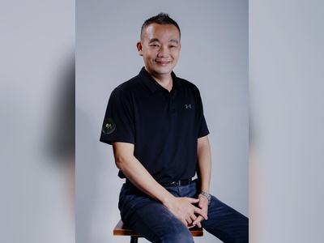

Vice Presidents
Vice President: Meng-Huang Lee, Ph.D.

Current Positions
- Vice President, Shih Chien University
- Dean of Academic Affairs, Shih Chien University
- Chair, General Education Curriculum Committee, Shih Chien University
- Professor, Department of Information Technology and Management, Shih Chien University
Education
- Ph.D. in Computer Science and Information Engineering, National Taiwan University
- M.S. in Electrical Engineering, National Cheng Kung University
- B.S. in Electrical Engineering, National Cheng Kung University
Professional Experience
- Dean, College of Management, Shih Chien University
- Director, Division of Liberal Arts, Shih Chien University
- Chief Information Officer, Shih Chien University
- Chair, Department of Information Technology and Management, Shih Chien University
- Dean of Student Affairs, Shih Chien University
- Director, Computer Center, Shih Chien University
- Visiting Scholar, Institute of Information Science, Academia Sinica
- Member, Phi Tau Phi Scholastic Honor Society
Vice President for International and Cross-Strait Affairs: Tony Kuo, Ph.D.
Tony Kuo, Ph.D.
Vice President for International and Cross-Strait Affairs
Shih Chien University

Current Positions
- Vice President for International and Cross-Strait Affairs, Shih Chien University
- Dean, Office of International Affairs, Shih Chien University
- Professor, English-Taught Program in International Business, Shih Chien University
Education
- Ph.D., Graduate Institute of American Studies, Tamkang University
- Master's degree in International Relations, Indiana University of Pennsylvania, U.S.A.
- Bachelor's degree in Journalism and Communication, Point Park University, Pittsburgh, U.S.A.
Professional Experience
- Executive Director, Global Affairs Center, National Taipei University of Education
- Director, International Master's Program in Learning and Teaching, National Taipei University of Education
- Associate Professor, Southeast Asia Regional Management Program, National Taipei University of Education
- Dean, Office of International Affairs, Shih Chien University
- Director, Preparatory Office of the International College, Shih Chien University
- Director, English-Taught Program in International Business, Shih Chien University
- Advisor, Taiwan Studies Center, George Washington University
- Visiting Scholar, The University of Texas at Austin, U.S.A.
- Chief Executive Officer, Monsoon Cultural and Educational Foundation
- Visiting Scholar, Stimson Center (think tank), U.S.A.
- Chair, Department of Applied Foreign Languages, Shih Chien University
- Director, Language Center, Shih Chien University
- Adjunct Assistant Professor, Department of History, Fu Jen Catholic University
- Visiting Scholar, Sigur Center, George Washington University, U.S.A.
Vice President and Director of Kaohsiung Campus: Paul Lin, Ph.D.
Paul Lin, Ph.D.
Vice President
Director of Kaohsiung Campus
Shih Chien University

Current Positions
- Vice President, Shih Chien University
- Director of Kaohsiung Campus, Shih Chien University
- Professor, Department of Recreation Management, Shih Chien University
Education
- Ph.D. in Educational Finance and Organizational Management, Graduate Institute of Educational Administration, National Pingtung University
- Master's degree in Sport Management, National Taiwan Normal University
- Bachelor's degree in Physical Education, Fu Jen Catholic University
Professional Experience
- Associate Dean of Academic Affairs, Kaohsiung Campus
- Chair, Department of Recreation Management, Kaohsiung Campus
- Vice Chair, General Education Curriculum Committee, Kaohsiung Campus
- Director, Second Center for General Education, Kaohsiung Campus
- Associate Professor, Department of Recreation Management, and Director, Physical Education Office, Kaohsiung Campus
- Coach, Men's and Women's Basketball Teams, Kaohsiung Campus
- Faculty Advisor, Basketball Referee Club, Kaohsiung Campus